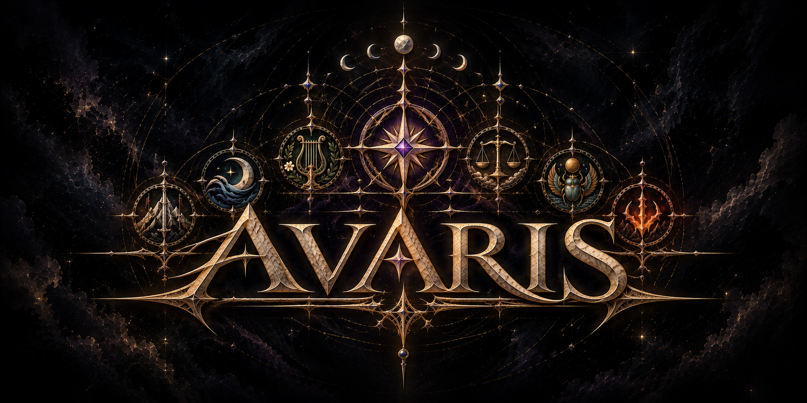

AVARIS

01 / The world
The seven kingdoms ↗A place for discovery.
AVARIS / WORLD MAPNo geography displayed
The map of Avaris
Canonical map pending
An interactive view will follow the original map.02 / Enter Avaris

Canonical map pending
An interactive view will follow the original map.